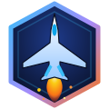

AIRCRAFT FLEET
Trainer
Airliner
Fighter
Helicopter
2 PLAYERS [P]
CAMERA & VIEW
VIEW: COCKPIT [C]
RESET HEAD [5]
APPROACH [L]
SOUND
AIRPORT (SOUTH INDIA)
START HERE
APPROACH
DESTINATION
LAND NEAREST [J]
METEOROLOGICAL PRESETS
Clear Sky
Monsoon BLR
28kt X-Wind
CAT III Fog
TIME OF DAY
Noon
Morning
Golden Hour
Dusk
GRAPHICS
Low
Medium
High + Bloom
AUTOPILOT (MCP)
AP [Z]
ALT HOLD [X]
NAV [V]
▼ -500 FT
▲ +500 FT
STATUS: AP OFF | TGT: NONE
CLICK TO ACTIVATE PROCEDURAL AUDIO ENGINE